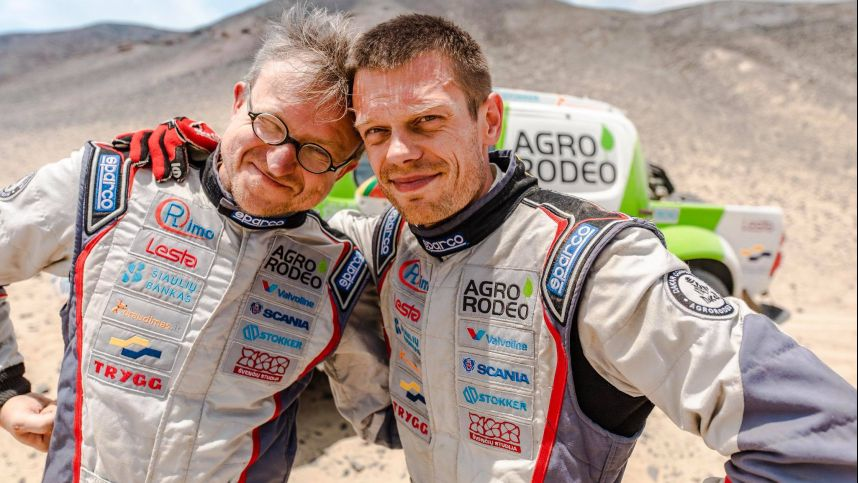

Lietuvių Dakaro Ralis 2020 metais
Edvinas Juškauskas ir Aisvidas Paliukėnas
s
Curmiai tai toks gyvūnas nepanašus į kurmius. O visai kitoks jis bėga 150km/h greičiu jo šuolis siekia 2 metrus ir 90 centimetrų. Curmiai moka plaukti lėtai iki 25m/h. Curmiai kitaip vadinami curgiais, o dar kitaip klūrgiais . Jo kūno ilgis siekia 1 metrą, o ptotis 5 centimetrus .Curmiai mėgsta krėsti išdaigas kaip ‚,nurauti kiaulei šnipą“ .Curmiai ėda kiaulę ir geria pieną ar vandenį. Jie nesikasa po žemėmis, o vaikšto kaip žmonės.
Vaidotas Žala ir Saulius Jurgelėnas

Curmiai tai toks gyvūnas nepanašus į kurmius. O visai kitoks jis bėga 150km/h greičiu jo šuolis siekia 2 metrus ir 90 centimetrų. Curmiai moka plaukti lėtai iki 25m/h. Curmiai kitaip vadinami curgiais, o dar kitaip klūrgiais . Jo kūno ilgis siekia 1 metrą, o ptotis 5 centimetrus .Curmiai mėgsta krėsti išdaigas kaip ‚,nurauti kiaulei šnipą“ .Curmiai ėda kiaulę ir geria pieną ar vandenį. Jie nesikasa po žemėmis, o vaikšto kaip žmonės.
Antanas Juknevičius ir Darius Vaičiulis
Curmiai tai toks gyvūnas nepanašus į kurmius. O visai kitoks jis bėga 150km/h greičiu jo šuolis siekia 2 metrus ir 90 centimetrų. Curmiai moka plaukti lėtai iki 25m/h. Curmiai kitaip vadinami curgiais, o dar kitaip klūrgiais . Jo kūno ilgis siekia 1 metrą, o ptotis 5 centimetrus .Curmiai mėgsta krėsti išdaigas kaip ‚,nurauti kiaulei šnipą“ .Curmiai ėda kiaulę ir geria pieną ar vandenį. Jie nesikasa po žemėmis, o vaikšto kaip žmonės.
Benediktas Vanagas ir Filipe Palmeiro

Curmiai tai toks gyvūnas nepanašus į kurmius. O visai kitoks jis bėga 150km/h greičiu jo šuolis siekia 2 metrus ir 90 centimetrų. Curmiai moka plaukti lėtai iki 25m/h. Curmiai kitaip vadinami curgiais, o dar kitaip klūrgiais . Jo kūno ilgis siekia 1 metrą, o ptotis 5 centimetrus .Curmiai mėgsta krėsti išdaigas kaip ‚,nurauti kiaulei šnipą“ .Curmiai ėda kiaulę ir geria pieną ar vandenį. Jie nesikasa po žemėmis, o vaikšto kaip žmonės.